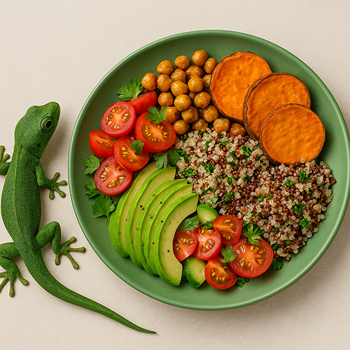

Keitto

40–45 min
Bataattikeitto
Lämmittävä ja täyteläinen keitto bataatista ja kauden kasviksista.
Katso resepti →Inspiroivia vegaanireseptejä ja kasvipohjaista ruokaa rakkaudella. Tervetuloa vihreälle lautaselle, jossa on aina tilaa uusille suosikeille.

Ei eläinperäisiä aineksia, joka ainoassa reseptissä.
Selkeät ohjeet ja arkiset ainekset.
Pienempi hiilijalanjälki joka aterialla.
Itse kokeiltuja ja hyväksi havaittuja reseptejä.
Kolme suosikkia, joita teen yhä uudelleen — keitosta leivonnaisiin.
Lämmittävä ja täyteläinen keitto bataatista ja kauden kasviksista.
Katso resepti →

Meheviä banaanimuffinsseja kahvihetkeen — valmistuvat hetkessä.
Katso resepti →Ajatuksia veganismista, ympäristöstä ja eettisestä ruokavaliosta — ja siitä, miten pienetkin valinnat ruokapöydässä vaikuttavat suureen kuvaan.